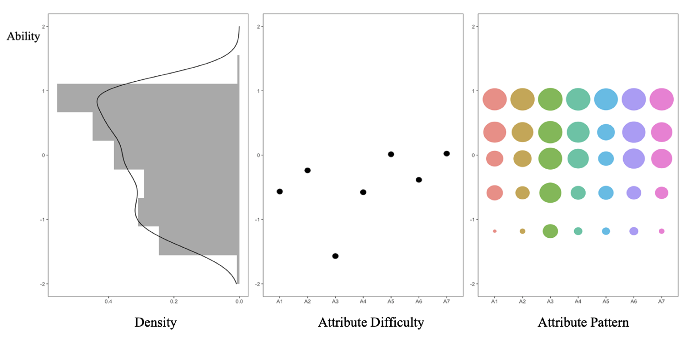

Paper Highlights
Representative recent publications from this research area
Scoring Individual Moral Inclination for the CNI Test
Chen, Y., Lugu, B., Ma, W., & Han, H. (2024) · DOI: 10.3390/stats7030054
The CNI test is a widely-used instrument in moral psychology that models decision-making in moral dilemmas via three group-level parameters: sensitivity to consequences (C), sensitivity to norms (N), and inaction preference (I). However, existing approaches can only estimate group-level parameters — not individual scores.
This paper introduces the EIRTree-CNI model, which embeds the CNI decision structure into an Extended Item Response Tree (EIRTree) framework. Each response is modeled as the outcome of a sequential decision process (e.g., C → N → I), and IRT models are fitted at each node to recover person-level moral inclination scores.
Findings: The model generates individual scores without requiring additional items, fits the data well, and demonstrates strong concurrent and predictive validity.

Rasch-CDM: Applying Rasch and Cognitive Diagnosis Models to Assess Learning Progression
Gao, Y., Zhai, X., Bae, A., & Ma, W. (2023)
Learning progressions (LPs) describe how students develop increasingly sophisticated understanding of a topic. The Rasch model is commonly used to validate LPs, but it only yields a single ability score — offering no information about which specific skills students have or have not mastered.
This chapter introduces Rasch-CDM, which combines the Rasch model's ability estimation with CDM's fine-grained attribute classification. Results are visualized on the MGZA map, displaying ability distribution, attribute difficulty, and attribute mastery patterns simultaneously to track how students progress through LP levels.
Findings: Applied to a buoyancy LP, the approach successfully validated the progression levels and revealed distinct attribute mastery patterns across LP stages — information not recoverable from Rasch alone.
Read Preprint →